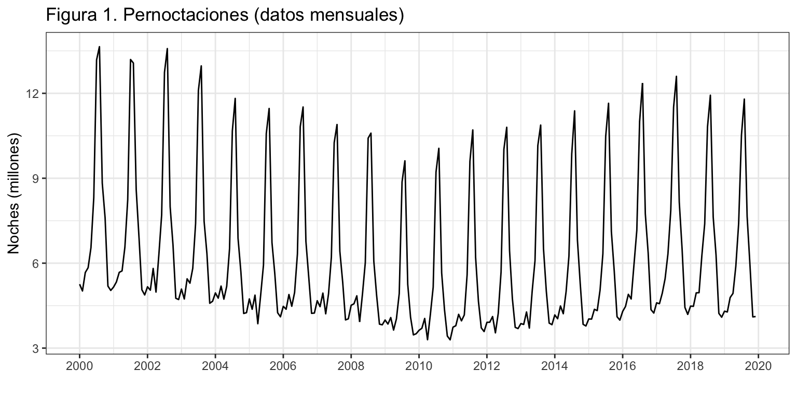
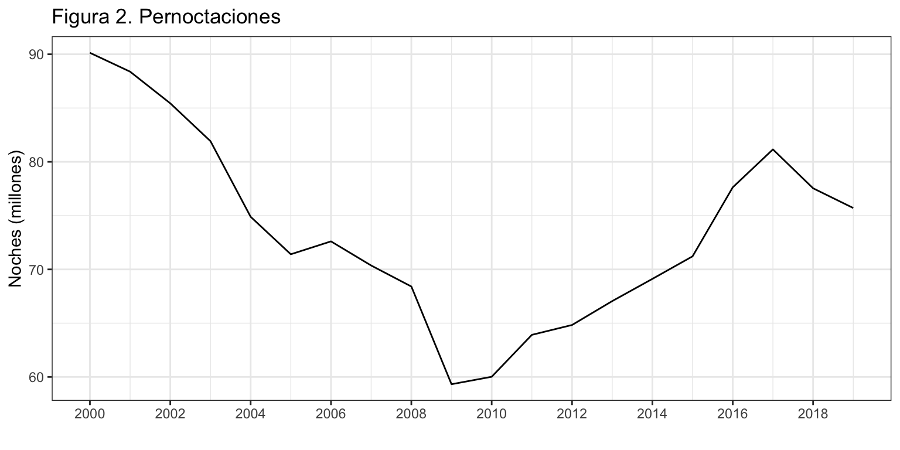
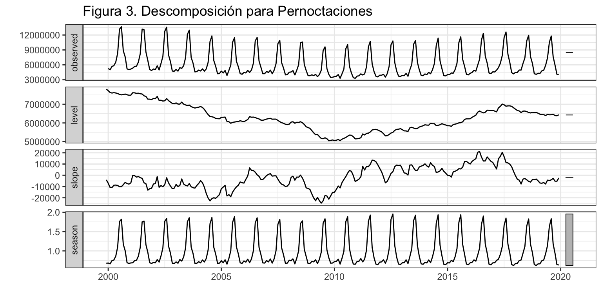
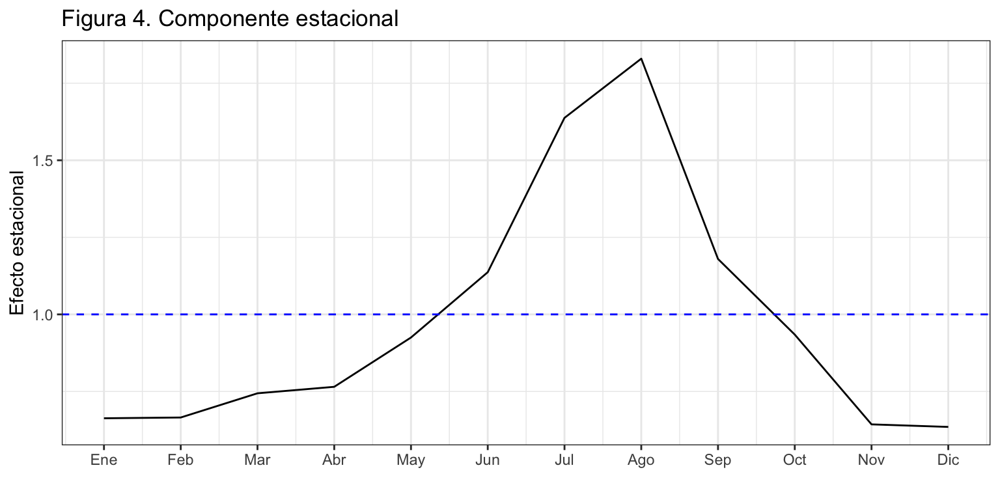
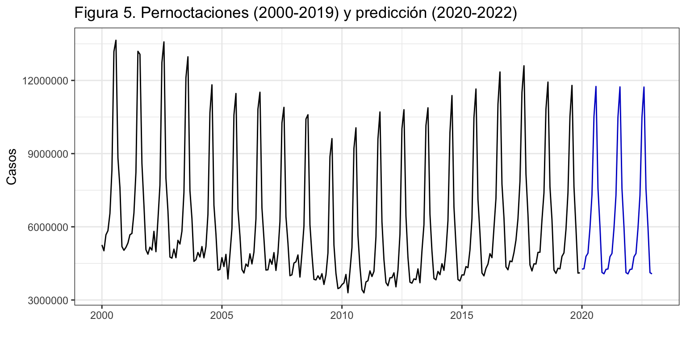
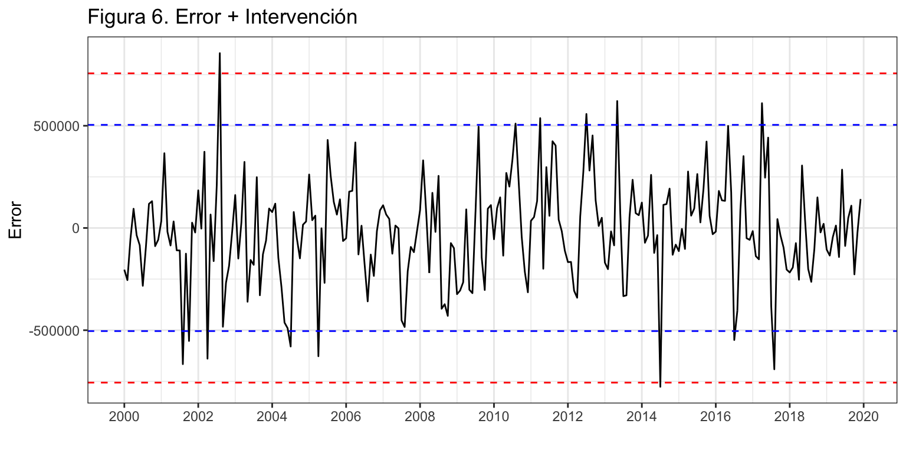
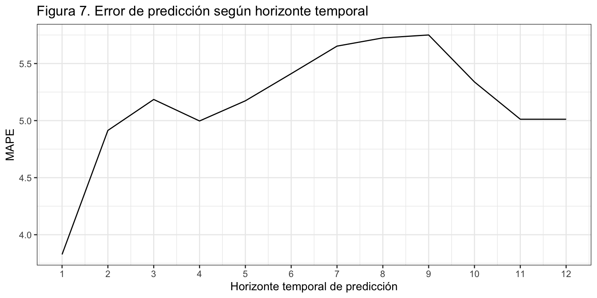
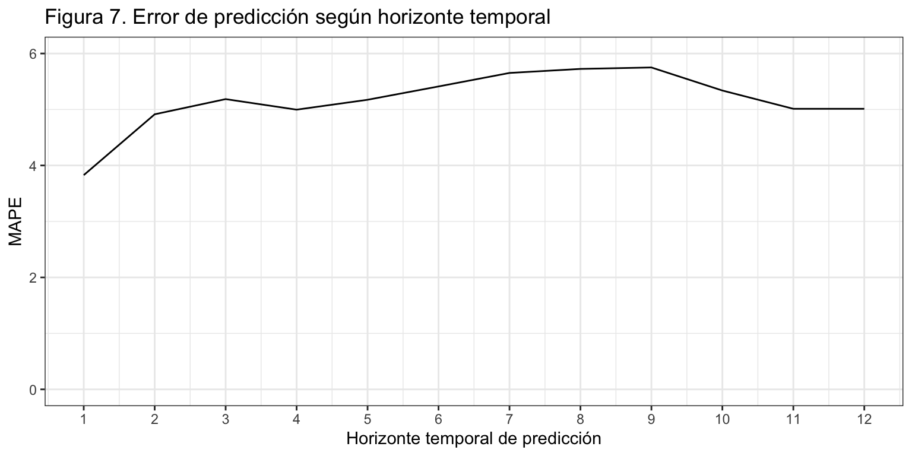

Introducción
Consideremos de nuevo la serie temporal correspondiente al número de pernoctaciones que los turistas extranjeros realizan en España en alojamientos turísticos autorizados (que llamaremos Pernoctaciones en adelante). Esta serie está disponible en Eurostat desde enero de 2000 hasta diciembre de 2019, un total de 20 años y 240 observaciones.
La serie presenta tendencia decreciente hasta finales de la primera década del presente siglo y luego creciente hasta los dos últimos años. La estacionalidad de orden 12 esta determinada por las vacaciones de verano. El esquema es multiplicativo.

La serie de Pernoctaciones anualizada (y en millones de noches) sería

Ajuste por alisado exponencial de las Pernoctaciones anuales
Vamos a aplicar la metodología de alisado exponencial a la serie de pernoctaciones anuales.
ETS(A,N,N)
Call:
ets(y = PernoctacionesAnual, model = "ZZZ")
Smoothing parameters:
alpha = 0.9999
Initial states:
l = 90.1324
sigma: 3.9344
AIC AICc BIC
118.5975 120.0975 121.5847
Training set error measures:
ME RMSE MAE MPE MAPE MASE ACF1
Training set -0.7213941 3.732477 3.024684 -1.012994 4.230428 0.950078 0.4149539
Si se estima el modelo sin imponer ninguna restricción, ets identifica como modelo óptimo ETS(A,N,N) donde el parámetro \(\alpha\) es igual a 1. Es decir, el mejor modelo de alisado corresponde al método ingenuo I con error aditivo: \(y_{t+1} = y_t + \varepsilon_{t+1}\), visto ya en el ejemplo del tema 3. El error porcentual cometido (4.2%) es similar al estimado para el método ingenuo I (4.4%). La diferencia se debe a que \(\alpha\) no es exactamente 1.
Para la serie anual, aunque hemos ampliado el menú de métodos, no hemos encontrado ningún método mejor que el más sencillo: predecir repitiendo la última observación.
Pernoctaciones mensuales
Vamos ahora a aplicar la metodología de alisado exponencial a la serie mensual de pernoctaciones.
Ajuste por alisado exponencial
Si se estima el modelo sin imponer ninguna restricción, ets identifica como modelo óptimo ETS(M,Ad,M).
ETS(M,Ad,M)
Call:
ets(y = Pernoctaciones, model = "ZZZ")
Smoothing parameters:
alpha = 0.2513
beta = 0.0113
gamma = 0.5525
phi = 0.9353
Initial states:
l = 7808552.8527
b = -4031.1697
s = 0.679 0.6999 0.9942 1.161 1.8271 1.7792
1.1054 0.864 0.7568 0.751 0.6827 0.6997
sigma: 0.0433
AIC AICc BIC
7294.190 7297.285 7356.842
Training set error measures:
ME RMSE MAE MPE MAPE MASE ACF1
Training set -16711.24 252133.4 190455.8 -0.3225669 3.20705 0.6175896 0.2290653
El modelo estimado tiene pendiente aditiva con amortiguamiento, estacionalidad multiplicativa y residuo multiplicativo: \[y_{t+1} = (l_t + \phi b_t) \cdot s_{t+1-m} \cdot (1 + \varepsilon_{t+1}).\]
El valor de \(\alpha\) indica que el nivel de la serie ha ido variando lentamente en el tiempo. El valor de \(\beta\) es prácticamente nulo, por lo que la pendiente se mantiene sin cambios durante el periodo de análisis. El valor de \(\gamma\) tan elevado indica que la componente estacional ha evolucionado con el paso de los años. Por último, \(\phi\) toma un valor relativamente bajo así que debemos aceptar que incluir amortiguamiento en el modelo mejora su ajuste a la serie. (Véase figura 3.)

La calidad del ajuste es bastante buena, con un MAPE de 3.2% y un RMSE de 252 mil pernoctaciones (o 190 si usamos el MAE). Además, según el MASE, el modelo de alisado exponencial supone una mejora del 38% respecto del método ingenuo con estacionalidad, que ya usamos para Pernoctaciones y tenía un MAPE del 5.3%. Parece que para la serie mensual el método de Alisado si supone una mejora notable en la calidad del ajuste respecto del método más sencillo.
Los últimos valores estimados del nivel y la estacionalidad, que corresponden a diciembre de 2019, nos permiten mostrar gráficamente la componente estacional más reciente (figura 4).
l b s1 s2 s3 s4 s5
6438187.38 -2370.33 0.63 0.64 0.93 1.18 1.83
s6 s7 s8 s9 s10 s11 s12
1.64 1.14 0.93 0.77 0.74 0.67 0.66
componenteEstacional <- PernoctacionesEts$states[TT, 14:3]
ggplot() +
geom_line(aes(x = 1:12, y = componenteEstacional)) +
geom_hline(yintercept = 1, colour = "blue", lty = 2) +
ggtitle("Figura 4. Componente estacional") +
xlab("") +
ylab("Efecto estacional") +
scale_x_continuous(breaks= 1:12,
labels = c("Ene", "Feb", "Mar", "Abr", "May", "Jun",
"Jul", "Ago", "Sep", "Oct", "Nov", "Dic"))

El nivel de las pernoctaciones en diciembre de 2019 (última observación) es de 6.4 millones de noches y la pendiente -2,370.33 noches, prácticamente nula (en comparación con el nivel). El mayor número de pernoctaciones tiene lugar en verano, en los meses de julio y agosto. En concreto, destaca el mes agosto con un incremento del 83% (s5) en las pernoctaciones respecto de la media anual. Las pernoctaciones en invierno bajan drásticamente respecto de la media anual, observándose en diciembre un 37% menos de pernoctaciones (s1). El efecto estacional estimado por el método de alisado es muy similar al estimado durante la descriptiva de la serie.
Predicción
Si pedimos los valores de predicción y su intervalo de confianza al 95% para los próximos tres años tenemos (numéricamente sólo se muestra el primer año):
Point Forecast Lo 95 Hi 95
Jan 2020 4266613 3904628 4628597
Feb 2020 4281182 3905615 4656749
Mar 2020 4784850 4350648 5219052
Apr 2020 4918954 4457152 5380757
May 2020 5945740 5368299 6523181
Jun 2020 7305364 6571633 8039094
Jul 2020 10520934 9428609 11613258
Aug 2020 11752010 10491427 13012594
Sep 2020 7576075 6737027 8415124
Oct 2020 5999382 5313852 6684912
Nov 2020 4128750 3642353 4615147
Dec 2020 4074723 3580202 4569245

Las predicciones muestran una suave tendencia decreciente. (Véase figura 5.)
Análisis del error
La figura 6 muestra el residuo del modelo, estimado aditivamente.
error <- residuals(PernoctacionesEts, type = "response")
sderror <- sd(error)
autoplot(error,
xlab = "",
ylab = "Error",
main = "Figura 6. Error + Intervención",
colour = "black") +
geom_hline(yintercept = c(-3, -2, 2 ,3)*sderror,
colour = c("red", "blue", "blue", "red"), lty = 2) +
scale_x_continuous(breaks= seq(2000, 2020, 2))

Se aprecian dos meses, agosto de 2002 y julio de 2014 en los que el residuo supera las tres desviaciones típicas. Además, otros residuos cercanos a las tres desviaciones típicas son susceptibles de ser considerados intervención: agosto de 2001, abril de 2002 y agosto de 2017. Observa que todos las intervenciones caen en meses vacacionales y cuatro de ellas en verano.
Validación
Ya hemos visto que el modelo comete un error próximo al 3.2%. Este valor es la estimación del error en la previsión intra-muestral y a un periodo vista. A fin de poder estimar mejor la capacidad predictiva del modelo vamos a estimar el error de previsión extra-muestral según el horizonte temporal.
Asumimos que se precisan diez años para hacer una buena estimación, \(k=120\), y que el horizonte temporal es un año, \(h = 12\) meses.
k <- 120 #Minimo numero de datos para estimar
h <- 12 #Horizonte de las predicicones
TT <- length(Pernoctaciones) #Longitud serie
s <- TT - k - h #Total de estimaciones
mapeAlisado <- matrix(NA, s + 1, h)
for (i in 0:s) {
train.set <- subset(Pernoctaciones, start = i + 1, end = i + k)
test.set <- subset(Pernoctaciones, start = i + k + 1, end = i + k + h)
fit <- ets(train.set, model = "MAM", damped = TRUE)
fcast<-forecast(fit, h = h)
mapeAlisado[i + 1,] <- 100*abs(test.set - fcast$mean)/test.set
}
errorAlisado <- colMeans(mapeAlisado)
errorAlisado
[1] 3.827112 4.913945 5.185219 4.996830 5.173516 5.411358 5.652740 5.724735
[9] 5.750523 5.338688 5.012106 5.012112

La figura 7 muestra el error de previsión extra-muestral según el horizonte de previsión. Se observa como para horizontes de predicción de uno a nueve meses el error de predicción aumenta según aumenta el horizonte de predicción, pasando del 3.8% para predicciones a un mes vista hasta el 5.8% para predicciones a nueve meses vista.
Sin embargo, para previsiones a más largo plazo el error de predicción decrece, hasta situarse en el 5% en las previsiones a un año vista. Sorprendentemente, a un año vista se produce un salto en el error, que alcanza el 6.7%.
Modelos alternativos
¿Podemos reducir el error extra-muestral de previsión si cambiamos las opciones por defecto de ets o la serie a analizar? Por ejemplo, ¿mejoramos si aplicamos el método de alisado sobre el logaritmo de la serie o usamos el criterio de minimizar el error de las previsiones a dos meses vista, o trabajamos con las pernoctaciones por día?
La figura 8 muestra el error de previsión extra-muestral según el horizonte de previsión para los siguientes modelos (todos con amortiguamiento):
| 1 |
Ninguna |
MAdM |
Máxima verosimilitud |
| 2 |
Ninguna |
MAdM |
Mínimo error en previsiones a 2 periodos vista |
| 3 |
Logaritmo |
AAdA |
Máxima verosimilitud |
| 4 |
Logartimo |
AAdA |
Mínimo error en previsiones a 2 periodos vista |
| 5 |
Pernoctaciones por día |
MAdM |
Máxima verosimilitud |
| 6 |
Pernoctaciones por día |
MAdM |
Mínimo error en previsiones a 2 periodos vista |
En concreto los comandos utilizados han sido:
- Modelo 1:
ets(x, model = "MAM", damped = TRUE)
- Modelo 2:
ets(x, model = "MAM", damped = TRUE, opt.crit = "amse", nmse = 2)
- Modelo 3:
ets(x, model = "AAA", lambda = 0, biasadj = TRUE, damped = TRUE)
- Modelo 4:
ets(x, model = "AAA", lambda = 0, biasadj = TRUE, damped = TRUE, opt.crit = "amse", nmse = 2)
- Modelo 5:
ets(x/monthdays(x), model = "MAM", damped = TRUE)
- Modelo 6:
ets(x/monthdays(x), model = "MAM", damped = TRUE, opt.crit = "amse", nmse = 2)

De la figura 7 deducimos que aunque todos los métodos resultan razonablemente equivalentes en el largo plazo, en el corto plazo las diferencias pueden ser significativas: la mayor diferencia entre los modelos se da para la previsión a dos y tres meses vista y es de 0.6 puntos porcentuales. Si queremos entrar en matices:
- Globalmente los modelos que ofrecen mejores previsiones son los modelos 2 y 6, que minimizan el error en previsiones a 2 periodos, en el modelo 2 para Pernoctaciones y en el modelo 6 para Pernoctaciones por día.
- A medio y largo plazo el modelo 4 resulta tan competente como los modelos 2 y 6. De nuevo es un modelo que minimiza el error en previsiones a 2 periodos, pero ahora sobre el logaritmo de las Pernoctaciones.
Es decir, tanto la estrategia de predecir la serie de Pernoctaciones medias por día, (en lugar de la serie original) como la de usar como criterio para estimar los parámetros del modelo la minimización del error de previsión a dos periodos vista mejoran la calidad de las previsiones extra-muestrales. La combinación de estas dos estrategias es óptima para la previsiones a corto plazo y de las mejores para el medio y largo plazo.
